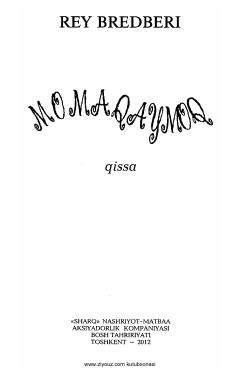

MBolalikning beg'ubor va sehrli yozgi ta'tili haqidagi ta'sirli qissa.
Ushbu asar yozuvchi Rey Bredberining mashhur qissasi bo'lib, unda bolalik dunyosi va kattalarning hayotga bo'lgan qarashlari o'ziga xos tarzda tasvirlangan. Asar voqealari yozgi ta'til davrida bo'lib o'tadi va unda bolalarcha beg'uborlik bilan birga hayotiy falsafiy mushohadalar ham o'z aksini topgan.